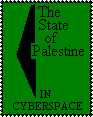

what's new?
advertise here


Advertisement: Click here


|


Advertisement: Click here
ONLINE MEMORIALS
1948-1998 - 50 Years of Human Rights Violations: Palestine Dispossessed http://www.lawsociety.org/conf/ - Initial announcement of this conference from LAW, the Palestinian Society for the Protection of Human Rights and the Environment. The goals of the conference intend to: "address the current distortion of historical fact concerning the last 50 years, with a focus on human rights abuses; develop strategies for addressing those past human rights abuses and providing just restitution for Palestinian victims in the framework of establishing a lasting peace; and highlight the promises of the UN Declaration of Human Rights and the failure of the Israeli government to fulfill even the minimum standards of this Declaration." Added to Complete Guide: 19 December 1997. Top of page.
50 Years of Nakba in Palestine http://www.alnakba.org/ - Project and URL by Khalil Sakakini Center in Ramallah. The Nakba ("Catastrophe") is an Arabic word referring to the events of 1948, when the region witnessed the mass deportation of a million Palestinians from their cities and villages, massacres of civilians, and the razing to the ground of hundreds of Palestinian villages in present day Israel. Not bad initial material, although a sense of the scale of the catastrophe isn't that apparent from the website and nothing has really been added to the site in the last few months. Added to Complete Guide: 20 December 1997 / Review last updated: 13 May 1998 Top of page.
 Deir Yassin Remembered www.deiryassin.org - DYR is an online information center about the massacre of many of the inhabitants of the village on Deir Yassin Remembered www.deiryassin.org - DYR is an online information center about the massacre of many of the inhabitants of the village on  9 April 1948. Includes information on the massacre and the quest to erect a memorial on the site, now an Israeli mental hospital ironically within sight of Israeli Holocaust museum Yad Vashem. There is an international competition for artists to design the memorial. A nicely-designed site, with frames. Former Complete Guide "Site of the Month". Review last updated: 20 December 1997. Top of page. 9 April 1948. Includes information on the massacre and the quest to erect a memorial on the site, now an Israeli mental hospital ironically within sight of Israeli Holocaust museum Yad Vashem. There is an international competition for artists to design the memorial. A nicely-designed site, with frames. Former Complete Guide "Site of the Month". Review last updated: 20 December 1997. Top of page.
Destroyed Palestinian Villages: A Reign of Terror & Systematic Expulsion: http://www.birzeit.edu/crdps/village.html - "In our country there is room only for the
Jews. We shall say to the Arabs: Get out! If they don't agree, if they resist, we shall drive them out by force." So said Professor Ben-Zion Dinur, Israel's First Minister of Education, 1954 in History of the Haganah. This website from Birzeit University's Center for Research and Documentation of Palestinian Society tells the story of how Israel went about this. It's always hard to argue with the facts. Review last updated: 20 December 1997. Top of page.
Intifada Diary: Ten Years After: http://www.birzeit.edu/diary/intifada/ - Part of A Personal Diary of the Israeli-Palestinian Conflict, the Intifada Diary: Ten Years After is a work in progress, to be undertaken between December 1997 and December 1998 to commemorate 10 years since the beginning of the Palestinian Intifada on 9 December 1997. It forms a section of the Peacequest multi-perspective website project on the Intifada. Intifada Diary will present interviews from staff, faculty and students of Birzeit University about their experiences during the Intifada. Added to Complete Guide: 20 December 1997. Top of page.
September 1996 Memorial Project: http://www.birzeit.edu/martyrs/september96/ - One year after the reporting Birzeit University undertook during the September 1996 clashes following the opening of the Old City tunnel in Jerusalem, members of the same team together with contacts in the West Bank and Gaza Strip, launched a website to offer the life stories of the 88 Palestinians who lost their lives. The idea was to draw attention to the human beings behind the statistics that pour out of this region, and to confront traditional ways of memorialising martyrs in Palestinian society. With 18 personal stories already available, the team are currently working on material collected from another 24 families, aiming to collect the remaining material and complete the project by the second anniversary in September 1998. The personal stories make strangely harrowing and uplifting reading, with Real Audio enabled interviews and music. Former Complete Guide "Site of the Month". Review last updated: 20 December 1997. Top of page.
Welcome to Yafa Homepage: http://www.yafa.org
A wonderful site devoted to the sea-side city of Yafa, home to thousands of Palestinians before Al-Nakba. The site has a diary section for people to record their experiences, or discuss and debate issues concerning Yafa and Al-Nakba. It also has a wealth of historical research. A good example of how the web can be used to connect us with the past in a rich and living way.Added to Complete Guide: 15 September 1998. Top of page.
RECOMMENDED SITES OUTSIDE PALESTINE
The Palestine Police Old Comrades Association http://ourworld.compuserve.com/homepages/palestinepolice/ - The Palestine Police of the British Mandate period. Included because of one section in particular, a history of the period entitled, "A Brief History of the Palestine Police Force" with an interesting perspective on the developments of the time. Added to Complete Guide: 13 May 1998. Top of page.
Qana Homepage http://www.future.com.lb/qana/ -
Brief information about this Israeli massacre of refugees in South Lebanon on 18 April 1996, and links to other Qana memorial and rememberance websites. Added to Complete Guide: 28 April 1998. Top of page.
USS Liberty Homepage http://www.ussliberty.org/jim/ussliberty/
What the Web was invented for. On 8 June 1967, the USS Liberty was attacked for 75 minutes in  international waters by Israeli aircraft and motor torpedo boats. Thirty-four men died and 171 were injured. Israel says it was an accident. The survivors point to the US flag flying high on its mast and a host of other US and Israeli suppressed facts, including periscope photography whose existance was attested by senior naval officers but the US government has repeatedly said does not exist. An incredible website with extensive content, you definitely will spend many fascinating hours browsing. Good Frames use, Real Audio. Former Complete Guide "Site of the Month". Review last updated: 20 December 1997. Top of page. international waters by Israeli aircraft and motor torpedo boats. Thirty-four men died and 171 were injured. Israel says it was an accident. The survivors point to the US flag flying high on its mast and a host of other US and Israeli suppressed facts, including periscope photography whose existance was attested by senior naval officers but the US government has repeatedly said does not exist. An incredible website with extensive content, you definitely will spend many fascinating hours browsing. Good Frames use, Real Audio. Former Complete Guide "Site of the Month". Review last updated: 20 December 1997. Top of page.
|
CATEGORY INDEX:
 home home
page
academic
& research
arts &
culture
business &
economy
government
& services
human
rights
industry &
products
internet &
computers
news &
media
online
memorials
organisations
& associations
personal
homepages
political
parties
schools &
universities
tourist
information
recommended
reading
website of
the month
golden
olive awards
palestine's
websites at
a glance
palestinian
mailing lists
key peace
process links
israeli
websites
|